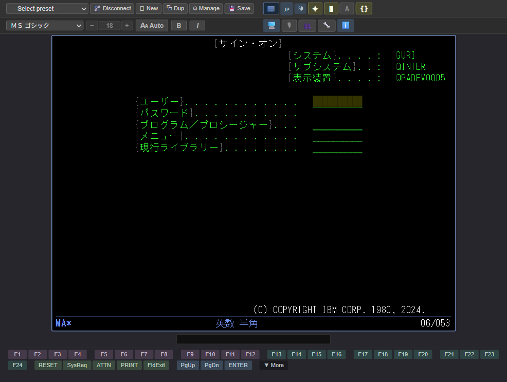
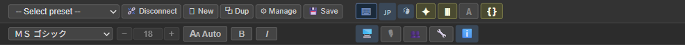
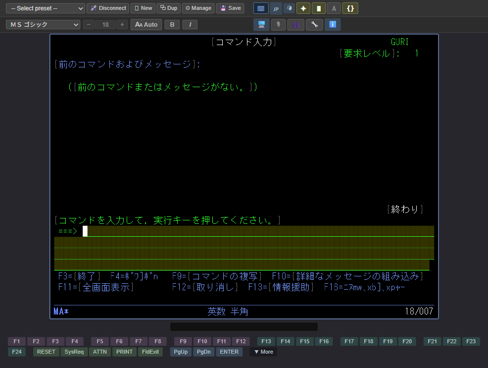
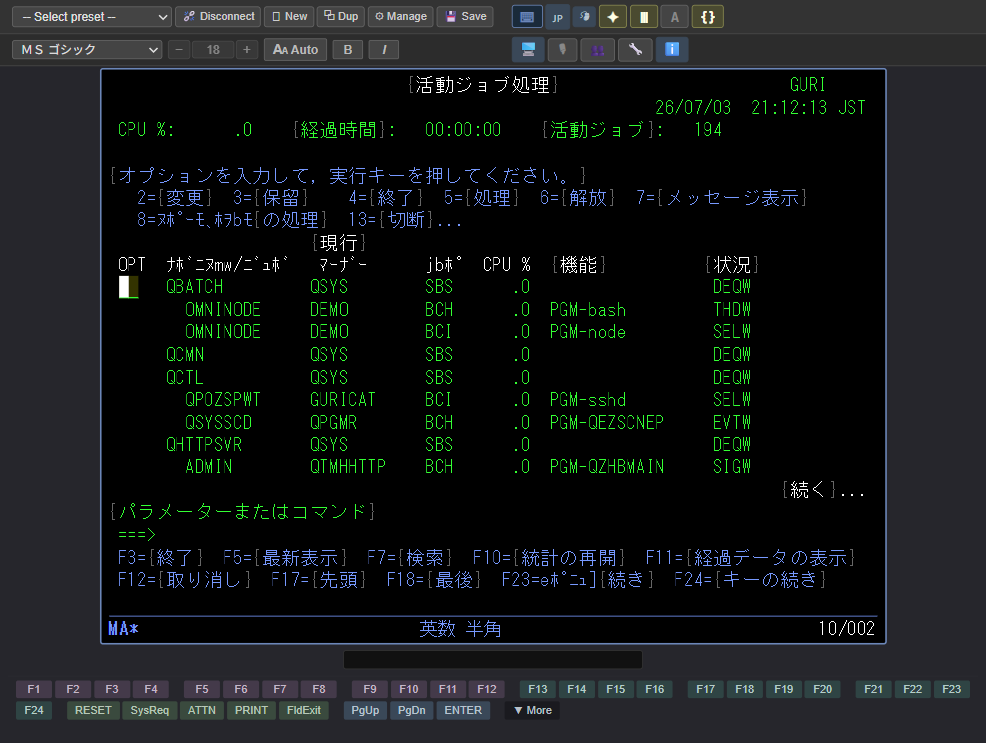
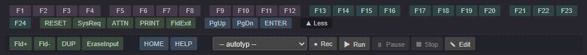
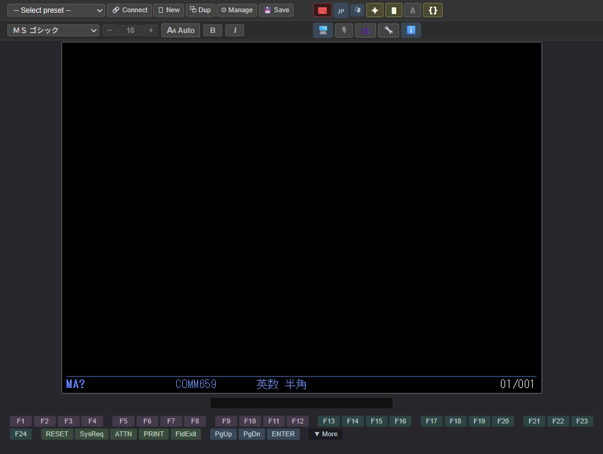
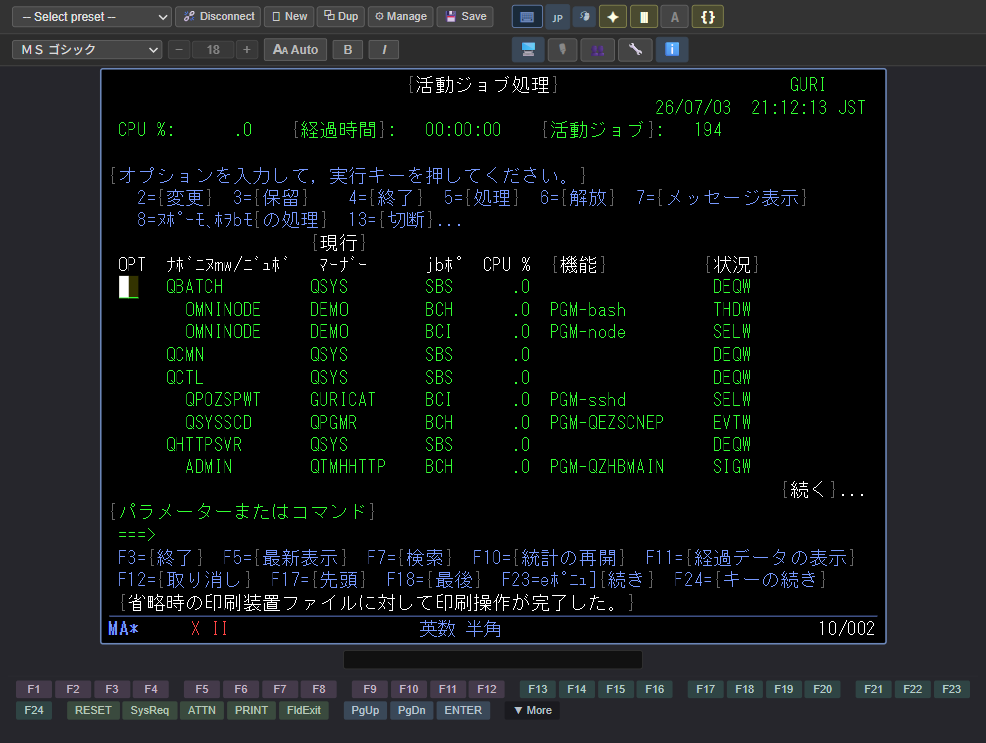

1Introduction
1.1 Product Overview
IBM 5250 MCP is development-support software for operating, in a web browser, 5250 terminal screens that run on IBM i (formerly AS/400, iSeries). It also works as a Model Context Protocol (MCP) server, supporting automated operation by generative AI agents (such as Claude).
- Operate in a web browser No dedicated client needs to be installed. You can operate 5250 screens from your own web browser.
- Japanese display support Correctly displays screens that mix DBCS (double-byte characters) and SBCS (single-byte characters).
- Automatic input feature You can save a frequently performed sequence of operations as an "AUTOTYP script" and reproduce it with a single click.
- MCP server support Generative AI agents can invoke and automatically operate 5250 screens. This is useful for test automation and for embedding into operational batch processing.
1.2 Structure of This Guide
| Chapter | Main Content |
|---|---|
| Chapter 1 | Introduces the product overview and the structure of this guide. |
| Chapter 2 | Explains the names and roles of the parts of the screen. |
| Chapter 3 | Explains the procedure for starting a connection and signing on. |
| Chapter 4 | Explains basic operations such as entering text, function keys, and copy and paste. |
| Chapter 5 | Explains useful features such as AUTOTYP, operation recording, and display switching. |
| Chapter 6 | Guides you through what to check when something is not working correctly. |
| Chapter 7 | Explains the technical terms used in this guide. |
| Chapter 8 | A list of keyboard shortcuts. |
2Names of Parts
2.1 The Whole Screen
The screen of this product consists of the following three areas. Check the numbers ①–③ and their corresponding positions on the screen.

1 2 3- ToolbarThere are two toolbar rows, upper and lower. The first row contains connection management, configuration editing, and saving settings; the second row contains the display font and size settings. Buttons for the input target (KBD ON/OFF) and display switching are also included in this area. Function keys and AUTOTYP operation buttons are also placed around the screen.
- 5250 ScreenDisplays the screen sent from IBM i. The "input fields" for entering text are also shown here.
- Operator Information Area (OIA)Displays the keyboard input state, cursor position, communication state, and so on. For details, see section 2.3.
2.2 Toolbar Description

Each button is described below (the left column shows the actual button appearance).
| Button | Description |
|---|---|
| First Row — Connection / Configuration | |
| Disconnect / Connect. Disconnects the current session. While disconnected, the button changes to Connect. When connecting, the connection begins in the current window; no new window is opened. | |
| New. Opens a new, unconnected window. Use this when you want to use multiple 5250 sessions at the same time. | |
| Duplicate. Opens a new window using the same connection configuration as the current session (the connection is also made immediately). When not connected, this behaves the same as "New" and opens an unconnected window. | |
| Manage. Displays a dialog for adding, editing, and deleting connection destination configurations. The default display font and size can also be specified for each configuration. | |
| Save. Saves the current display font, size, bold, italic, and other settings to the connected configuration. The next time you connect with the same configuration, those settings are restored. | |
 | Keyboard input target. Switches the keyboard input target between the 5250 screen (on) and toolbar operations (off). You can also switch with Ctrl + K. |
| Language. Switches the display language of the viewer UI (Japanese / English). Switching it also changes the default font and default host code page used when creating a new connection configuration (Japanese: MS Gothic / cp1399, English: Consolas / cp037). Already-saved configurations are not affected. | |
| Wheel settings. Opens a settings dialog for screen scrolling with the mouse wheel. | |
| Input highlight. Toggles the yellow highlighting of input fields (on / off). | |
| Column separator. Switches the column separator display between "lines" and "dots". | |
| A / ｱ. Switches the SBCS code page (DBCS sessions only). A = lowercase Latin (cp1027), ｱ = Katakana (cp290) | |
| { } / · ·. Shows or hides shift characters (SO/SI) (DBCS sessions only). | |
| Second Row — Display Font | |
| Font selection | Selects the display font for the 5250 screen. At the top of the list are monospace fonts (recommended), and below them all the fonts installed on the OS are listed. In Japanese (DBCS) sessions, a Japanese font that can correctly display kanji is selected by default. |
| − / Size / + | Changes the font size. In automatic mode, the size currently in use is shown (cannot be changed); in fixed mode, you can enter a value directly. − / + increase or decrease by 1 px at a time. |
| Auto / Fixed. Switches the size adjustment method. Auto automatically adjusts the size to fit the 5250 screen within the window. Fixed locks the size to the specified value and adjusts the window size so that the 5250 screen fits exactly. | |
| Bold (B). Toggles bold display on / off. | |
| Italic (I). Toggles italic display on / off. | |
 | Window mode toggle. Switches the viewer window between an "app window" (a dedicated window without an address bar) and a normal browser window. The button shows the icon of the mode it will switch to (🌐 = to a normal window / 🖥 = to an app window). Clicking it closes the current window, reopens it in the other mode, and also changes the default for the next startup. |
 | Microphone. Click to start voice input; it stops automatically when you finish speaking (click again while recording to stop midway). For details, see section 5.5. |
| Exclusive / Shared. Switches the input mode. Exclusive (the default at startup) means that even if the same connection is opened in another browser or PC, only the one person holding exclusive control can enter input. With Shared, everyone can enter input, and multiple people can operate at the same time. While someone holds exclusive control, other browsers cannot switch to exclusive (the button appears disabled). For details, see section 2.4. | |
| Hide all toolbars. Hides all toolbars (the two upper toolbar rows, the notification area, and the function key toolbar) and displays only the 5250 screen (the OIA remains). This is a hide-only button. To show them again, click the gray area outside the 5250 screen (because the button itself also disappears while hidden). When hidden, the keyboard input target switches to the 5250 screen (Keyboard on), and the 5250 screen font size is readjusted to fit the freed-up area. You can specify the initial state per connection configuration ("Toolbar initially hidden" in the Manage dialog), and it is applied when connecting. | |
 | Help (ℹ). Opens the help in a normal browser window. It shows the product version and build date, the End-User License Agreement (EULA), third-party notices, this User Guide, and the Admin Guide. For details, see section 5.6. |
2.3 Operator Information Area (OIA)
The status line at the bottom edge of the 5250 screen (the Operator Information Area, abbreviated as OIA) displays the current keyboard state and communication state.

| Display | Meaning |
|---|---|
| MA* (column 1) | Indicates that you are connected to IBM i. |
| X II (column 9) | The keyboard is temporarily locked. This product is processing the previous operation (such as printing). You can release it with the RESET key. |
| X SYSTEM (column 9) | Waiting for a response from the server. Please wait a moment. |
| COMM659 (column 19) | Communication has been disconnected. Please reconnect. It disappears automatically when communication is restored. |
| Alphanumeric / Kana (column 26) | Indicates the current input mode (DBCS sessions only). |
| A (column 43) | Indicates that Caps Lock is on. |
| ^ (column 52) | Indicates insert mode. It appears whenever insert mode is on. |
| 18/007 (column 75) | Indicates the current cursor position (row 18 / column 7). It is shown as a combination of a 2-digit row and a 3-digit column. |
In insert mode, "^" also appears at OIA column 52.
2.4 Exclusive and Shared Input
You can open the same connection in multiple browsers or PCs at the same time. In this case, the "input mode" controls who can enter input. Switch with the 👤 / 👥 button on the toolbar (in either mode, everyone who has it open can view the screen).
| Mode | Description |
|---|---|
| 👤 Exclusive (default at startup) | Only the one person holding exclusive control can enter input. Even if the same connection is opened in another browser or PC, others cannot enter text, send keys, or move the cursor. |
| 👥 Shared | Everyone who has the connection open can enter input. Use this when you want multiple people to operate at the same time. Input is processed in the order it arrives. |
While someone holds exclusive control, the 👤 button in other browsers appears disabled and cannot be switched to exclusive. When the person who held exclusive control switches to 👥 Shared or closes the connection, another browser becomes able to take exclusive control.
3Before You Begin
3.1 Starting a Connection
The procedure for starting a connection is as follows.
-
Open the product screen in your browser
Open the address provided in advance by your administrator (for example,
http://localhost:5250/) in a web browser. If you started the product directly, an unconnected screen opens automatically.When using an AI agent (MCP)If you asked an AI agent such as Claude to connect, this step is not needed. When the connection completes, a window showing that session opens automatically (one connection = one window). -
Select a connection configuration
From the "-- Select configuration --" drop-down at the top of the toolbar, select the connection destination you want to use. Selecting it starts the connection immediately.
If the Connection Configuration Is Not in the ListIf the connection destination you want is not in the list, contact your administrator. Alternatively, you can add a new one from the "⚙ Manage configurations" button (for details, see the "Administrator Guide"). -
The sign-on screen appears
When the connection succeeds, the IBM i sign-on screen appears.
Figure 3.1-1 Sign-on Screen
3.2 Signing On
-
Enter your user name
Enter your user name (the value provided by your administrator) in the "User" field.
-
Move to the password field
Press the Tab key to move the cursor to the "Password" field.
-
Enter your password and press the Enter key
After entering your password, press the Enter key. When sign-on succeeds, the IBM i menu screen (or command entry screen) appears.

Figure 3.2-1 Command Entry Screen After Sign-on
4Basic Operations
4.1 Entering Text
You can enter text from the keyboard at the position where the cursor is blinking (= an input field).
-
Select an input field
Click the position where you want to enter text with the mouse, or use the Tab key to move to the next field. To move in the reverse direction, press Shift + Tab.
-
Enter text
Enter text from the keyboard. Japanese input (IME) can also be used.
-
Press a confirm key
Pressing the Enter key, or the appropriate F1–F24 key, sends the entered content to IBM i.
- BackSpace: Moves the cursor one character to the left (the character is not deleted).
- Delete: Deletes the character at the cursor position and shifts the text to the right leftward.
- Insert: Switches between insert mode (= inserting characters in between) and overwrite mode. In insert mode, "^" appears at OIA column 52.
- End: Erases from the cursor position to the end of the line (Erase EOF).
In a field for entering double-byte characters (kanji and kana), the mode automatically switches to "Kana" when the cursor enters (shown in the OIA). The characters that can be entered are determined by the type of field, and if you enter a character that does not match the type, a message appears at the bottom of the screen and the input is rejected.
- Double-byte-only field: If you enter alphanumeric characters, "DBCS is required as input." appears.
- Either-or field: If the first character entered is alphanumeric, that field becomes alphanumeric-only; if it is a double-byte character, it becomes double-byte-only (mixing is not allowed).
4.2 Function Keys (F1–F24)
In 5250 applications, the F1–F24 function keys are used frequently. The common assignments are as follows.
| Key | Function (common example) |
|---|---|
| F1 | Displays help. |
| F3 | Ends the current process. |
| F4 | Displays a list of choices (prompt). |
| F5 | Refreshes the screen to the latest state. |
| F12 | Cancels the process and returns to the previous screen. |

4.3 Copy and Paste
-
Select a range
Dragging the mouse highlights the range you want to copy in yellow (just drag—you do not need to hold Ctrl or Shift).
You can also select with the keyboard. Hold Shift and move the cursor with the arrow keys (↑ ↓ ← →) to highlight the range you pass over.
-
Copy
Pressing Ctrl + C copies the selected range to the clipboard.
-
Paste
Place the cursor in an input field and press Ctrl + V. Multi-line text with line breaks is also pasted automatically according to the arrangement of the fields.
-
Undo the paste (optional)
Pressing Ctrl + Z immediately after pasting restores the state before the paste. You can undo only immediately after pasting; you cannot undo after pressing another key.
4.4 Mouse Operations
When you click on the 5250 screen with the mouse, the cursor moves to that position. The following operations are also supported.
| Operation | Behavior |
|---|---|
| Click a normal position | The cursor moves to that position (nothing is sent to the server). |
| Click a choice or push button | You can directly click on-screen choice buttons or push buttons (supporting the DDS MOUBTN keyword) to select or execute them. |
| Drag | Selects a range (for copying; see section 4.3). |
| Click the scroll bar arrows (▲ / ▼) | Scrolls one line at a time. |
| Click the scroll bar track (other than the arrows) | Scrolls one page at a time. |
5Useful Features
5.1 AUTOTYP (Automatic Input)
AUTOTYP is a mechanism that automatically runs a frequently performed sequence of inputs all at once. For example, you can reproduce everything from "signing on to opening a menu" with a single click.
The AUTOTYP operation buttons are located in the lower panel that appears when you click the ▼ More button at the right end of the toolbar at the bottom of the screen (while the panel is shown, the button changes to ▲ Less; clicking it again collapses the panel).

The AUTOTYP operation buttons are described below (the left column of the table shows the actual appearance of each button).
| Button | Description |
|---|---|
| Script selection. Choose the script to run or edit from the list of AUTOTYP scripts in the scripts folder. | |
| Rec (record). Starts recording your screen operations. While recording, the button turns red; clicking it again stops recording and opens the edit dialog (see Section 5.3). | |
| Run. Runs the selected script on the current screen. | |
 | Pause. Pauses the running script. Clicking it again resumes from the same position (enabled only while a script is running). |
| Stop. Aborts the running script. It cannot be resumed (enabled only while a script is running). | |
 | Edit. Opens the selected script in the edit dialog, where you can review, modify, and save its contents. |
-
Select a script
From the "-- autotyp --" drop-down in the lower panel shown by ▼ More, select the script you want to run.
-
Run it
Clicking the ▶ Run button runs the selected script on the current screen.
-
Operate as needed
Choose one of the following three options during execution.
- Just wait: Please wait for the script to finish.
- Pause: Click ⏸ Pause. Clicking it again resumes from the same position.
- Stop: Click ⏹ Stop. Execution is aborted. It cannot be resumed.
5.2 Automatic Execution After Connecting
If you set up a "post-connection automatic-execution AUTOTYP" for each connection configuration, simply connecting can automatically perform everything from signing on to displaying the menu. For how to set this up, see the "Administrator Guide".
5.3 Recording Operations
You can automatically record keyboard and mouse operations as an AUTOTYP script.
-
Start recording
Click the ● Rec button. The button turns red to indicate that recording is in progress.
-
Perform the operations to record
Perform the operations you want to save as AUTOTYP, such as key input, function keys, and pasting.
-
Stop recording
Clicking the ● Rec button again stops recording and opens the edit dialog. Review the content, modify it as needed, and then save.
5.4 Display Switching
You can change the screen display to your preference using the toolbar icons.
| Icon | Function |
|---|---|
| ✦ | Highlights input fields in yellow. You can see at a glance where input is possible (on / off). |
| ⦀ / ┅ | Switches whether column separators are shown as vertical lines or as dotted lines. |
| A / ｱ | Switches the SBCS display characters toward lowercase Latin or toward Katakana (DBCS sessions only). |
| { } / · · | Shows or hides shift characters (SO/SI) (DBCS sessions only). |
The above four display switches are saved as a single set of default values for the entire viewer (= not per connection configuration). The settings are retained even after reloading the browser.
5.5 Voice Input
Using the microphone button on the toolbar, you can convert what you say into the microphone into text and send it as input to Claude. You can convey screen operations and instructions by voice, without using the keyboard.
The speech recognition language follows the viewer's display language: it recognizes Japanese (ja-JP) when the display language is Japanese, and English (en-US) when it is English (switched with the language button).
-
Start voice input
Click the microphone button. The button changes state and the microphone becomes active (the first time, the browser asks for permission to use the microphone).
-
Speak
Speak what you want to enter. What you say is converted into text.
-
Sent to Claude
The converted text is sent as input to Claude. Voice input ends automatically when you finish speaking (to stop it midway, click the microphone button again).
5.6 Online Help
Click the Help (ℹ) button on the second toolbar row to open the help in a normal browser window. The first page shows the following information.
| Item | Description |
|---|---|
| Version | The product version and build date. Please include them when contacting support. |
| License | Shows the End-User License Agreement (EULA) and the third-party notices for open-source software included in the product. |
| Help | Shows the User Guide (this document) and the Admin Guide. |
When you open a guide, the screen is divided into two panes.
| Pane | Description |
|---|---|
| Left — contents and search | Contains the document selector, the table of contents, and a search box. Clicking an entry in the table of contents scrolls the right pane to that heading. Typing two or more characters in the search box lists the matching places in the text; clicking one jumps to it and highlights the matched words. |
| Right — document | The body of the selected document, including images. |
6Troubleshooting
6.1 Cannot Connect
| Symptom | Please Check |
|---|---|
| The screen does not appear even after selecting a connection |
|
| COMM659 appears in the OIA | Communication has been disconnected. Click "🔌 Connect" on the toolbar to reconnect. The display disappears automatically when communication is restored. |

6.2 The Screen Does Not Respond
| Symptom | Please Check |
|---|---|
| No response when pressing keys / X II appears in the OIA | This product is processing the previous operation (such as printing). Pressing the RESET key releases it. |
| X SYSTEM stays displayed in the OIA | The server is being awaited for a response. Normally just wait a moment. If no response returns for a long time, press SysReq (System Request), type 2 on the displayed input line, and press Enter to force-end the program or command running on the IBM i. If that still does not resolve it, consult your administrator. |

6.3 Other
| Symptom | Please Check |
|---|---|
| The characters are too small to see | Use the + button in the second toolbar row to increase the font size. Setting it to "AA Auto" automatically adjusts the size to fit the window. |
| Keyboard input is not reflected on the 5250 screen | It is set to KBD OFF. Click the KBD OFF button or press Ctrl + K to turn it back ON. |
| Cannot enter Japanese | Check that the IME is enabled. Check whether the OIA display is stuck on "Alphanumeric". |
7Glossary
- IBM i
- An operating system for core enterprise systems provided by IBM. It was formerly called AS/400 and iSeries.
- 5250
- The name of the terminal protocol used for communication with IBM i. This product implements TN5250E (5250 over Telnet).
- Sign-on
- Refers to logging in to IBM i by entering a user name and password.
- Function key
- Keys such as F1–F12 in the top row of the keyboard. In 5250 applications, F1–F24 are used.
- OIA (Operator Information Area)
- An abbreviation for Operator Information Area. Refers to the status line displayed at the bottom edge of the screen, showing the keyboard state and so on.
- X II / X SYSTEM
- OIA displays indicating that the keyboard is locked. X II indicates that this product is performing processing, and X SYSTEM indicates that it is waiting for a response from the server.
- COMM659
- An OIA display indicating that communication has been disconnected. It disappears automatically when communication is restored.
- Insert mode
- A mode in which entered characters are inserted in between at the cursor position. Switch it with the Insert key. In insert mode, "^" appears at OIA column 52.
- AUTOTYP
- This product's own mechanism for automatically running a previously recorded sequence of input operations.
- MCP (Model Context Protocol)
- A communication protocol for invoking external tools from generative AI agents such as Claude. This product works as an MCP server, allowing AI agents to automatically operate 5250 screens.
- Connection configuration
- A setting that bundles together the host name, port number, code page, and so on of a connection destination. You can switch between and use multiple connection destinations.
- DBCS / SBCS
- DBCS refers to double-byte characters (kanji, hiragana, katakana, etc.), and SBCS refers to single-byte characters (alphanumerics, half-width katakana, etc.).
8Keyboard Reference
8.1 Basic Operation Keys
| Key | Function |
|---|---|
| Enter | Sends the entered content. |
| Tab | Moves to the next input field. |
| Shift + Tab | Moves to the previous input field. |
| Home | Moves to the first input field. |
| ← → ↑ ↓ | Moves the cursor up, down, left, and right. |
| BackSpace | Moves the cursor one character to the left (does not delete the character). |
| Delete | Deletes the character at the cursor position and shifts the text to the right leftward. |
| Insert | Switches between insert mode and overwrite mode (on / off). |
| End | Erases from the cursor position to the end of the line (Erase EOF). |
| Esc | Used for closing dialogs, sending the ATTN key, and so on. |
8.2 Function Keys
| Key | Function |
|---|---|
| F1–F12 | Sent as F1–F12 as is. |
| Shift + F1–F12 | Sent as F13–F24. |
8.3 Clipboard Operations
| Key | Function |
|---|---|
| Ctrl + C | Copies the selected range to the clipboard. |
| Ctrl + V | Pastes the contents of the clipboard. |
| Ctrl + Z | Pressing this immediately after pasting undoes the paste. |
| Mouse drag | Selects a range (no modifier key needed). |
| Shift + arrow keys | Moves the cursor to select a range (a selection method that does not use the mouse). |
8.4 Special Operations
| Key | Function |
|---|---|
| Ctrl + K | Switches the keyboard input target (KBD ON / OFF). |
| Left Ctrl (alone) | Sends the RESET key. |
| Right Ctrl (alone) | Sends Field Exit. |